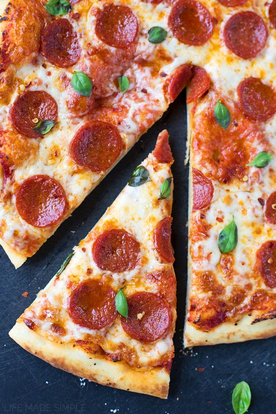

How to make pancakes!

Pizza is...
a wonderful meal to start off your day!Nothing says "weekend"
like homemade pancakes for breakfast. Our easy recipe will
help you whip them up in less than 30 minutes. Making pancake
batter from scratch is so simple that you'll wonder why you
never did it before!
Ingredients:
- 1 cup all purpose flour
- 2 tablespoons sugar
- 1/2 teaspoon salt
- 1 cup milk
- 2 tablespoons vegetable oil
- 1 large egg
- toppings of choice (bananas, berries, etc)
Cooking Steps:
- Combine the flour,milk,sugar,eggs,salt and some vegetable oil
- Stir the mixture till it has no bubbles and clumps
- put teaspoon of vegetable oil on the pan
- scoop some of the mixture our and put it on the pan
- cook each side till golden brown
- Enjoy!
Back to top
Return to main page